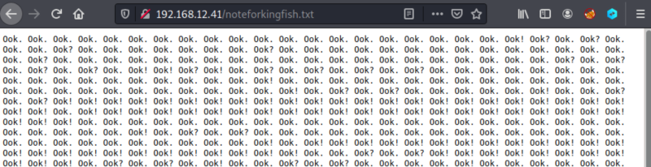
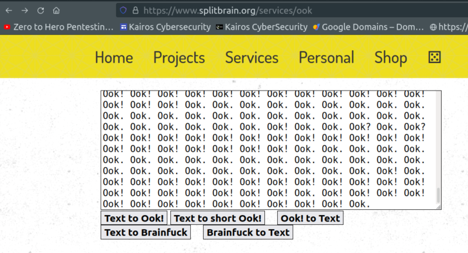
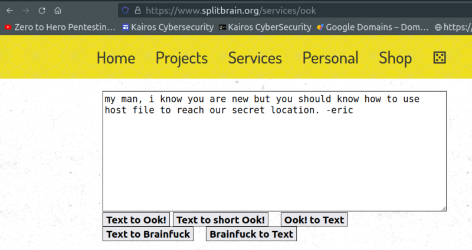

3.1 noteforkingfish.txt
1. Visit http://192.168.12.41/noteforkingfish.txt.

It seems something encoded.
More info about Ook here.
2. Go to https://www.splitbrain.org/services/ook, copy the content of the previous page and paste it on the field.

3. Click on the “Ook to test” button.

It seems to be some subdomain of
driftingblues.box.